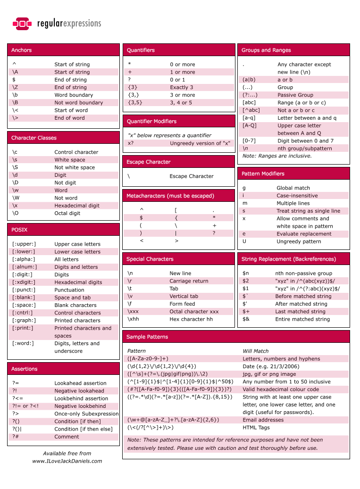

关于
正则表达式即一种功能强大的针对字符串的匹配规则。它在匹配时将匹配字符与匹配数量分开表示。比如一些元字符的匹配一次全部都只匹配一个，而通过专门的方式来表示匹配数量或者重复匹配。\\同样还是表示转义字符。本文没有特殊说明的情况下默认举例的单词是针对英文，不包含汉字。
本文如无特殊说明，使用的正则表达式语法指的是兼容Perl的正则语法，因为Perl语言的正则表达式是支持最广泛的，包括PHP、Python、Java的大量正则包，还有微软的.NET Framework、Tcl以及C/C++的类库。
参考资源：
- (正则表达式30分钟入门教程)[http://deerchao.net/tutorials/regex/regex.htm]
- 《精通正则表达式》
- 一个介绍正则表达式资料的网站：http://www.regular-expressions.info/
- 正则表达式工具Regexbuddy附带的帮助： http://www.regexbuddy.com
- 微软MSDN上.NET的正则表达式语言-快速参考：https://msdn.microsoft.com/zh-cn/library/az24scfc.aspx
- Python的正则表达式在线编辑器：http://www.pyregex.com/
- Ruby的正则表达式在线编辑器： http://rubular.com/
- 国外一个正则表达式库： http://www.regexlib.com
- 正则表达式的debug工具： https://www.debuggex.com/
- 包含各种语言的在线正则表达式测试工具： http://www.regexplanet.com/
- 很新颖的正则表达式编辑、高亮、debug工具： https://regex101.com/
元字符
元字符即其本身有就着的特殊含义，而不是表示其字符本身。
.匹配除换行符以外的任意一个字符，所有匹配没有特别说明都表示匹配一个。\w匹配字母、数字、下划线、汉字、繁体等字符\s匹配任意的空白符\d匹配数字\b匹配单词的开始或结束，它相当于匹配的是个位置^匹配字符串的开始，同样相当于匹配的是个位置$匹配字符串的结束()用于分组
表达式中想匹配元字符就必须使用转义字符\，例如匹配.,(,),\需要使用\.,\(,\),\\
表示数量的限定符
*重复零次或更多次+重复一次或更多次?重复零次或一次{n}重复n次{n,}重复n次或更多次{n,m}重复n到m次，即n到m次之间任意多次都进行匹配，例如\d{1,3}可以匹配999以内的任意数字
限定字符范围
通过[]可以限定只有[]中包含的某个才能被匹配。例如如果我想匹配某个单词开头必须是元音字母，就可以这样\b[aeiou]\w+\b，当然这个会把a2dw也匹配进去。[]中可以使-来表示某一范围内的字符,例如[0-9]表示匹配0-9之间的任意一个数字，与\d含义一样。同时可以这样使用[a-z0-9A-Z]，它与\w含义一样，如果只考虑英文，即只匹配一个数字或字母。所以[]中的短线-是有着特殊含义的，但当-放在[]中，且短线前后不同时是单一的字母或数字时不需要加转义字符，如[a-\d]表示从a,-或数字中任意选择一个，但有些情况却会出错，例如[?-=]意思可以跟你想的不一样，最好是将含有单一-的情况时将短线放在最后面，如[?=-]。
反义
反义就是匹配相反的内容，即跟上面的元字符匹配内容相反的情况，只是将对应的小写字母改成大写。
\W匹配任意不是字母、数字、下划线、汉字的字符\S匹配任意不是空白符的字符\D匹配任意非数字的字符\B匹配不是单词开头或结束的位置[^x]匹配除了x以外的任意字符[^aeiou]匹配除了aeiou这几个字母以外的任意字符
eg:\S+匹配不包含空白符的字符串<m[^>]+>匹配用尖括号括起来的以m开头的字符串，中间可以有空白等任意字符，与<m.+>的区别是当一行中有多个>时它只会匹配到第一个>位置处。
分支条件
分支条件即可以使用分隔符|起到或的作用，即多个表达式通过|连接在一起，满足任意一个表达式即进行匹配。如通过\(0\d{2}[)]\d{8}|\d{3}-\d{8}可以同时匹配到以下两种电话号码010-12345678和(010)12345678
注意分支条件的匹配是有顺序的，即从左到右测试，如果测试成功，则停止测试，不再进行后续的测试，所以使用分支条件连接多个表达式时应将限制条件较多的表达式放在前面。eg: \d{5}-\d{4}|\d{5}与\d{5}|\d{5}-\d{4}的匹配结果是不一样的，明显前一个的较精确，因为它的将限制较多的表达式放在了前面，而后一个在匹配时会忽略掉后一个分支限制。
分组()的用法
分组即通过()将多个匹配作为一组，然后对这整个组进行操作。例如将匹配成功的某个需要字串进行重复、再匹配等。一个简单的匹配IP的表达式(\d{3}.){3}\d{3}，即将后面跟有一个点的3位数字进行3次重复，然后面再跟上一个三位的数字。显示这个匹配漏洞很多。下面是一个较为精确的例子，仔细分析，然后尝试写出其它方式的IP匹配，将会收获很多，((2[0-4]\d|25[0-5]|[01]?\d\d?)\.){3}(2[0-4]\d|25[0-5]|[01]?\d\d?)。
当对表达式进行分组时会默认分配一个组号，该组号从\0开始，\0代表整个表达式匹配的内容，\1代表第一个分组表达式匹配的内容。例如\b(\w+)\b\s+\1\b可以匹配"go go"这样的单词，其中\1就代表(\w+)匹配到的内容。可以通过?<name>exp或者?nameexp对分组进行重命名。例如前面的表达式等价于\b(?<word>\w+)\b\s+\k<word>\b。
关于常用分组的语法
- 捕获
(exp)匹配exp,并捕获文本到自动命名的组里(?<name>exp)匹配exp,并捕获文本到名称为name的组里，也可以写成(?’name’exp)(?:exp)匹配exp,不捕获匹配的文本，也不给此分组分配组号，只是进行正常的匹配
- 零宽断言
(?=exp)匹配exp前面的位置(?<=exp)匹配exp后面的位置(?!exp)匹配后面跟的不是exp的位置(?<!exp)匹配前面不是exp的位置
- 注释
(?#comment)这种类型的分组不对正则表达式的处理产生任何影响，用于提供注释方便阅读
零宽断言
所谓零宽断言即进行位置匹配，以找到该位置前面或者后面所需要的匹配内容。
(?=exp)也叫零宽度正预测先行断言，它断言自身出现的位置的后面能匹配表达式exp。 eg:\b\w+(?=ing\b),匹配以ing结尾的单词的前面部分，不包含ing，如singing and dancing只会匹配出来sing和danc。(?<=exp)即零宽度正回顾后发断言，它断言自身出现的位置的前面能匹配表达式exp。eg:(?<=\bre\w+\b)会匹配以re开头的单词的后半部分，如reading a book，只会匹配到ading。
举例：(?<=\s)\d+(?=\s)匹配以空白符间隔的数字(再次强调，不包括这些空白符)。(?!exp)即零宽度负预测先行断言，断言此位置的后面不能匹配表达式exp。例如：如果想查找某个单词，它里面出现了字母q，但q后面跟的不是字母u，通常可能会这样写\b\w*q[^u]\w*\b，多数时间好用，但它会匹配qq.com，faq ask这样的字串，因为匹配时[^u]也会消耗掉一个字符。如果使用位置来匹配，如\b\w*q(?!u)\w*\b便可以完美解决。eg:\d{3}(?!\d)匹配三位数字，而这三位数字的后面不能是数字；\b((?!abc)\w)+\b匹配不包含连续字符串abc的单词。(?<!exp)即零宽度负回顾后发断言，断言此位置的前面不能匹配表达式exp。如(?<![a-z]>)\d{7}匹配前面不是小写字母的七位数字。
举例：(?<=<(\w+)>).*(?=<\/\1>)匹配不包含属性的简单HTML标签内里的内容。(?<=<(\w+)>)指定了这样的前缀：被尖括号括起来的单词(比如可能是<b>)，然后是.*(任意的字符串),最后是一个后缀(?=<\/\1>)。注意后缀里的\/，它用到了前面提过的字符转义；\1则是一个反向引用，引用的正是捕获的第一组，前面的(\w+)匹配的内容，这样如果前缀实际上是<b>的话，后缀就是</b>了。整个表达式匹配的是<b>和</b>之间的内容(再次提醒，不包括前缀和后缀本身)。
注释
使用(?#comment)来添加注释，eg: 2[0-4]\d(?#200-249)|25[0-5](?#250-255)|[01]?\d\d?(?#0-199)。这个非特殊情况估计很少用，不过这里作者的举例很好：要包含注释的话，最好是启用“忽略模式里的空白符”选项，这样在编写表达式时能任意的添加空格，Tab，换行，而实际使用时这些都将被忽略。启用这个选项后，在#后面到这一行结束的所有文本都将被当成注释忽略掉。例如，我们可以前面的一个表达式写成这样：
1 | (?<= # 断言要匹配的文本的前缀 |
regexbuddy中Free-spacing模式即忽略空格。
贪婪与懒惰模式
当正则表达式中包含能接受重复的限定符时，通常的行为是（在使整个表达式能得到匹配的前提下）匹配尽可能多的字符。以这个表达式为例：a.*b，它将会匹配最长的以a开始，以b结束的字符串。如果用它来搜索aabab的话，它会匹配整个字符串aabab。这被称为贪婪匹配。 有时，我们更需要懒惰匹配，也就是匹配尽可能少的字符。前面给出的限定符都可以被转化为懒惰匹配模式，只要在它后面加上一个问号?。这样.*?就意味着匹配任意数量的重复，但是在能使整个匹配成功的前提下使用最少的重复。
现在看看懒惰版的例子吧：a.*?b匹配最短的，以a开始，以b结束的字符串。如果把它应用于aabab的话，它会匹配aab（第一到第三个字符）和ab（第四到第五个字符）。
懒惰限定符
*?重复任意次，但尽可能少重复+?重复1次或更多次，但尽可能少重复??重复0次或1次，但尽可能少重复{n,m}?重复n到m次，但尽可能少重复{n,}?重复n次以上，但尽可能少重复
.Net常用的正则表达式处理选项
在C#中，你可以使用Regex(String, RegexOptions)构造函数来设置正则表达式的处理选项。如：
1 | Regex regex = new Regex(@"\ba\w{6}\b", RegexOptions.IgnoreCase); |
常用的处理选项
IgnoreCase(忽略大小写) 匹配时不区分大小写。Multiline(多行模式) 更改^和$的含义，使它们分别在任意一行的行首和行尾匹配，而不仅仅在整个字符串的开头和结尾匹配。(在此模式下,$的精确含意是:匹配\n之前的位置以及字符串结束前的位置.)Singleline(单行模式) 更改.的含义，使它与每一个字符匹配（包括换行符\n）。IgnorePatternWhitespace(忽略空白) 忽略表达式中的非转义空白并启用由#标记的注释。ExplicitCapture(显式捕获) 仅捕获已被显式命名的组。
平衡组/递归匹配
仅试用于.Net框架，其他平台略有不同
使用场景：有时我们需要匹配像( 100 * ( 50 + 15 ) )这样的可嵌套的层次性结构，这时简单地使用\(.+\)则只会匹配到最左边的左括号和最右边的右括号之间的内容(这里我们讨论的是贪婪模式，懒惰模式也有下面的问题)。假如原来的字符串里的左括号和右括号出现的次数不相等，比如( 5 / ( 3 + 2 ) ) )，那我们的匹配结果里两者的个数也不会相等。有没有办法在这样的字符串里匹配到最长的，配对的括号之间的内容呢？
(?'group')把捕获的内容命名为group,并压入堆栈(Stack)(?'-group')从堆栈上弹出最后压入堆栈的名为group的捕获内容，如果堆栈本来为空，则本分组的匹配失败(?(group)yes|no)如果堆栈上存在以名为group的捕获内容的话，继续匹配yes部分的表达式，否则继续匹配no部分(?!)零宽负向先行断言，由于没有后缀表达式，试图匹配总是失败，即此表达式始终为false。
我们需要做的是每碰到了左括号，就在压入一个”Open”,每碰到一个右括号，就弹出一个，到了最后就看看堆栈是否为空－－如果不为空那就证明左括号比右括号多，那匹配就应该失败。正则表达式引擎会进行回溯(放弃最前面或最后面的一些字符)，尽量使整个表达式得到匹配。
1 | < #最外层的左括号 |
平衡组的一个最常见的应用就是匹配HTML,下面这个例子可以匹配嵌套的
<div[^>]*>[^<>]*(((?'Open'<div[^>]*>)[^<>]*)+((?'-Open'</div>)[^<>]*)+)*(?(Open)(?!))</div>
总结
- 正则表达式在匹配时，除了位置匹配外都会在字符匹配过程中占用一个字符的位置，例如负向零宽断言中的举例。
- Cheat-sheet:

常见问题
1.正则表达式语法有多个版本，主要有以下几个版本:
- ECMA-262 (ECMAScript) regular expressions (slightly modified?)
- Basic POSIX regular expressions
- Extended POSIX regular expressions
- awk regular expressions
- grep regular expressions
- egrep regular expressions
关于正则表达式引擎介绍，可以看wikipedia，超详细https://en.wikipedia.org/wiki/Comparison_of_regular_expression_engines
POSIX的语法中使用[:xxx:]来进行元字符匹配，其他基本都一样，不同的实现平台，需要根据相应手册来进行实现。
Welcome to my other publishing channels